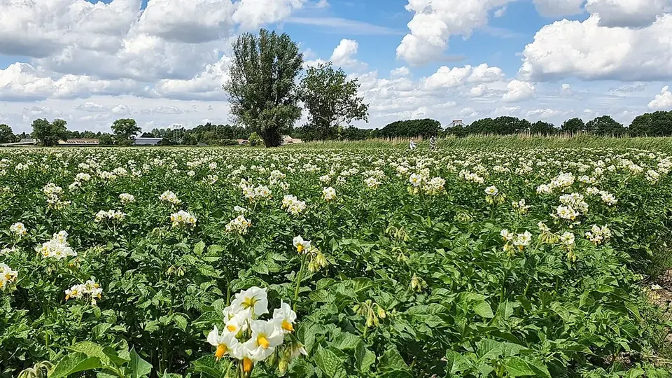

আলু চাষ — বীজ থেকে হিমঘর
Potato Farming in West Bengal
আলু চাষের লাভ-ক্ষতি অনেকটাই ঠিক হয়ে যায় বীজ লাগানোর আগেই। আর জানুয়ারির কুয়াশায় ধসা রোগে কয়েক দিনের দেরিই সবচেয়ে বড় ক্ষতি।
✍️ Kunal Rajput — KrashiMitra⏱️ 8 মিনিট পড়া📅 অক্টোবর ২০২৬

আলুর ক্ষেত। আলের ওপর লাগানো গাছের গোড়ায় মাটি তুলে দিলে আলু রোদে সবুজ হয় না।
আলু চাষ — এক নজরে
🗓️
নভেম্বর
মূল লাগানোর সময়
🥔
কুফরি জ্যোতি
সবচেয়ে চেনা জাত
🌫️
জানুয়ারি
ধসা রোগের ঝুঁকি
📖
ভূমিকা
হুগলি, পূর্ব বর্ধমান, পশ্চিম মেদিনীপুর, বাঁকুড়া, জলপাইগুড়ি — আমন ধান ঘরে উঠতেই বাংলার মাঠে
শুরু হয় আলু চাষের তোড়জোড়। পশ্চিমবঙ্গ দেশের অন্যতম বড় আলু উৎপাদক রাজ্য, আর
এখানকার হাজার হাজার হিমঘর (কোল্ড স্টোরেজ) সারা বছর এই আলুর ওপরেই চলে।
কিন্তু আলু চাষে লাভ-ক্ষতির হিসেব অনেকটাই ঠিক হয়ে যায় বীজ লাগানোর আগেই — কোন জাত, কেমন বীজ,
কবে বসানো হল। আর জানুয়ারির কুয়াশায় নাবি ধসা রোগ একবার ছড়ালে কয়েক দিনেই গোটা
মাঠ পুড়ে যাওয়ার মতো দেখায়। এই প্রবন্ধে বীজ বাছাই থেকে আলু তোলা পর্যন্ত পুরো পথটা ধাপে ধাপে
বলা হল।
বিজ্ঞাপন
🥔
কোন জাত কীসের জন্য
আগে ঠিক করুন আলু কোথায় যাবে — খোলা বাজারে, হিমঘরে রেখে পরে বিক্রি, না চিপস কারখানায়। বাংলায়
সবচেয়ে বেশি চাষ হয় কুফরি জ্যোতি, তবে অন্য জাতেরও নিজস্ব বাজার আছে।
জাত
কীসের জন্য
বিশেষত্ব
কুফরি জ্যোতি
খাওয়ার আলু, হিমঘর
বাংলার সবচেয়ে চেনা জাত, সাদা খোসা
কুফরি পোখরাজ
আগাম বিক্রি
তাড়াতাড়ি তৈরি হয়, হলদেটে শাঁস
কুফরি চন্দ্রমুখী
আগাম বিক্রি
কম সময়ে তৈরি
চিপস জাত (কুফরি চিপসোনা, অ্যাটলান্টিক ইত্যাদি)
চিপস কারখানা
সাধারণত চুক্তি চাষে
💡
চিপসের জাত তখনই লাগান যখন ক্রেতা বা চুক্তি আগে থেকে পাকা। খোলা বাজারে এই আলু সাধারণ
খাওয়ার আলুর মতো বিকোয় না।
🏷️
বীজ আলু — সবচেয়ে বড় খরচ, সবচেয়ে বড় ঝুঁকি
বাংলার অনেক চাষি বীজ আলু কেনেন পাঞ্জাব বা অন্য রাজ্য থেকে আসা মাল থেকে। বীজ যেখান থেকেই আসুক,
কয়েকটা জিনিস দেখে নেওয়া জরুরি:
ট্যাগ আর রসিদ: শংসিত (সার্টিফায়েড) বীজের বস্তায় ট্যাগ থাকে। ট্যাগ আর রসিদ রেখে দিন — বীজ খারাপ বেরোলে এটাই প্রমাণ।
শক্ত, পচনহীন কন্দ: নরম, কাটা, পচা বা সবুজ হয়ে যাওয়া আলু আলাদা করুন।
অঙ্কুর: হালকা আলোয় ছড়িয়ে রাখলে ছোট, মোটা, সবুজাভ অঙ্কুর বেরোয় — এগুলোই ভালো। অন্ধকারে বেরোনো লম্বা সাদা অঙ্কুর লাগানোর সময় ভেঙে যায়।
হিমঘরের বীজ: হিমঘর থেকে বের করে সোজা মাঠে নয় — কয়েক দিন ছায়ায় ছড়িয়ে বাইরের তাপমাত্রায় সইয়ে নিন।
কাটা বীজ: বড় আলু কাটলে প্রতিটি টুকরোয় দু-তিনটি চোখ রাখুন, আর কাটা মুখ ছায়ায় শুকিয়ে তবে লাগান।
বীজ শোধন: দরকার আছে কিনা এবং কী দিয়ে, তা কৃষি বিজ্ঞান কেন্দ্র (KVK) বা ব্লক কৃষি দপ্তরে জিজ্ঞেস করুন; কোনো পণ্য ব্যবহার করলে তার লেবেল মেনে চলুন।
বিজ্ঞাপন
🌱
লাগানোর সময় আর পরিচর্যা
দক্ষিণবঙ্গের সমতলে আলু লাগানোর মূল সময় নভেম্বর মাস; আগাম আলু অক্টোবরের শেষ থেকে
লাগানো হয়। বেশি দেরিতে লাগালে ফসল ফেব্রুয়ারি-মার্চের গরমে পড়ে, আলু ছোট থাকে। আবার মাটি খুব
গরম থাকতে লাগালে বীজ পচে যেতে পারে।
নালা-আল পদ্ধতি: আলের ওপর আলু লাগান, যাতে কন্দ ছড়ানোর জায়গা পায় আর গোড়ায় জল না দাঁড়ায়।
মাটি তোলা: গাছ বড় হলে গোড়ায় মাটি তুলে দিন। খোলা আলু রোদে সবুজ হয়ে যায় — সবুজ আলু খাওয়ার অযোগ্য, বাজারে দামও পায় না।
সেচ হালকা: নালার অর্ধেকের বেশি জল ভরবেন না। আল ডুবে গেলে আলু পচে।
সার: কোন সার কতটা লাগবে, তা মাটি পরীক্ষার কার্ড (সয়েল হেলথ কার্ড) বা KVK-র পরামর্শে ঠিক করুন।
ডগা কাটা: তোলার কয়েক দিন আগে গাছের ডগা কেটে দিলে আলুর খোসা শক্ত হয়, হিমঘরে ভালো থাকে।
🌫️
নাবি ধসা — কুয়াশার শত্রু
ডিসেম্বরের শেষ থেকে জানুয়ারিতে টানা কুয়াশা, মেঘলা আকাশ আর ঠান্ডা-ভেজা আবহাওয়া হলে
নাবি ধসা দ্রুত ছড়ায়। পাতায় জলে-ভেজা কালচে দাগ, পাতার নিচে সাদা ছত্রাকের আস্তরণ আর
পোড়া গন্ধ — এই হল চেনার উপায়।
আবহাওয়ার খবর রাখুন: কুয়াশা আর মেঘলা দিন পরপর থাকলে মাঠে রোজ নজর দিন।
আক্রান্ত গাছ তুলে ফেলুন: প্রথম দু-একটা আক্রান্ত গাছ দেখলেই তুলে মাঠের বাইরে নষ্ট করুন।
সন্ধ্যায় সেচ নয়: রাতভর ভেজা পাতা রোগ বাড়ায়।
ওষুধ: কোন ওষুধ কখন দেবেন, সেটা KVK বা কৃষি দপ্তরের পরামর্শে ঠিক করুন এবং লেবেল অনুযায়ী ব্যবহার করুন। আগে থেকে প্রস্তুতি রাখলে সময় নষ্ট হয় না।
⚠️
ধসা রোগে কয়েক দিনের দেরিই সবচেয়ে বড় ক্ষতি করে। পাশের জমিতে রোগ দেখা দিলে নিজের জমিও
ঝুঁকিতে — প্রতিবেশীদের সঙ্গে খবর ভাগ করুন।
🚫
এই ভুলগুলো কখনও করবেন না
রসিদ ছাড়া বীজ কেনা — খারাপ বীজের দায় কেউ নেবে না।
হিমঘর থেকে সোজা মাঠে — ঠান্ডা বীজ দেরিতে ও অসমানভাবে গজায়।
নালা ভরে সেচ — আল ডুবলে আলু পচে।
মাটি না তোলা — সবুজ আলু বাজারে বিকোয় না।
ধসার প্রথম লক্ষণ উপেক্ষা করা — কয়েক দিনে গোটা মাঠ যেতে পারে।
🗓️
আলু চাষের ক্যালেন্ডার
সময়
জরুরি কাজ
অক্টোবর
জাত ঠিক করা, বীজ বুকিং, আমন কাটার পর জমি তৈরি
নভেম্বর
বীজ সইয়ে নেওয়া ও অঙ্কুরোদগম, আলে আলু লাগানো
ডিসেম্বর
মাটি তোলা, হালকা সেচ, আগাছা পরিষ্কার
ডিসেম্বর শেষ - জানুয়ারি
ধসা রোগে রোজ নজর, আবহাওয়ার খবর
ফেব্রুয়ারি-মার্চ
ডগা কাটা, আলু তোলা, বাছাই করে হিমঘরে পাঠানো
✅
উপসংহার
আলু চাষে তিনটি কথা মনে রাখুন: রসিদসহ ভালো বীজ, সময়মতো লাগানো আর গোড়ায় মাটি
তোলা, এবং কুয়াশার দিনে ধসা রোগে রোজ নজর।
যেমন বীজ, তেমন ফলন — আর যেমন নজর, তেমন রক্ষা।
বিজ্ঞাপন
❓
প্রায়ই জিজ্ঞাসিত প্রশ্ন
1পশ্চিমবঙ্গে আলু কখন লাগাতে হয়?
দক্ষিণবঙ্গের সমতলে আলু লাগানোর মূল সময় নভেম্বর মাস; আগাম আলু অক্টোবরের শেষ থেকে লাগানো হয়। খুব দেরিতে লাগালে ফসল গরমে পড়ে আর আলু ছোট থাকে।
2potato farming in bengali — বাংলায় কোন আলুর জাত সবচেয়ে বেশি চাষ হয়?
পশ্চিমবঙ্গে সবচেয়ে বেশি চাষ হয় কুফরি জ্যোতি। আগাম বিক্রির জন্য কুফরি পোখরাজ ও চন্দ্রমুখী, আর চুক্তি চাষে চিপসের জাত লাগানো হয়।
3নাবি ধসা রোগ কীভাবে চিনব?
পাতায় জলে-ভেজা কালচে দাগ, পাতার নিচে সাদা ছত্রাক আর পোড়া গন্ধ — এগুলোই নাবি ধসার লক্ষণ। কুয়াশা ও মেঘলা দিনে এটি খুব দ্রুত ছড়ায়, তাই তখন রোজ মাঠে নজর দিন।
4হিমঘরের বীজ আলু কীভাবে লাগাব?
হিমঘর থেকে বের করে কয়েক দিন ছায়ায় ছড়িয়ে বাইরের তাপমাত্রায় সইয়ে নিন, তারপর হালকা আলোয় অঙ্কুর বের করে লাগান। সোজা ঠান্ডা বীজ লাগালে দেরিতে ও অসমানভাবে গজায়।
5আলু সবুজ হয়ে যায় কেন?
মাটির ওপরে বেরিয়ে থাকা আলু রোদ লেগে সবুজ হয়ে যায়। গাছের গোড়ায় ঠিক সময়ে মাটি তুলে দিলে এটা আটকানো যায়। সবুজ অংশ খাওয়া উচিত নয়, বাজারেও দাম পায় না।
6আলু তোলার আগে ডগা কাটা কেন দরকার?
তোলার কয়েক দিন আগে ডগা কাটলে আলুর খোসা শক্ত হয়, তোলার সময় কম ছড়ে যায় আর হিমঘরে বেশি দিন ভালো থাকে।
🌾
KrashiMitra.in — আপনার বিশ্বস্ত কৃষি সাথী
মান্ডির দর, সরকারি প্রকল্প, বীজ-সারের তথ্য আর ফসলের রোগের সমাধান — সব এক জায়গায়।